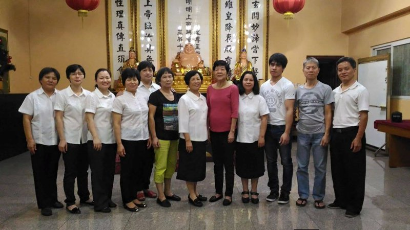
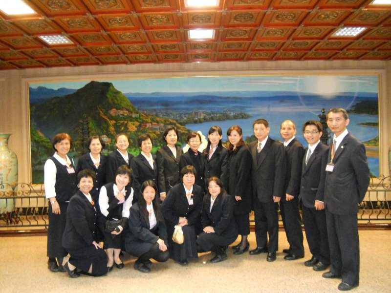
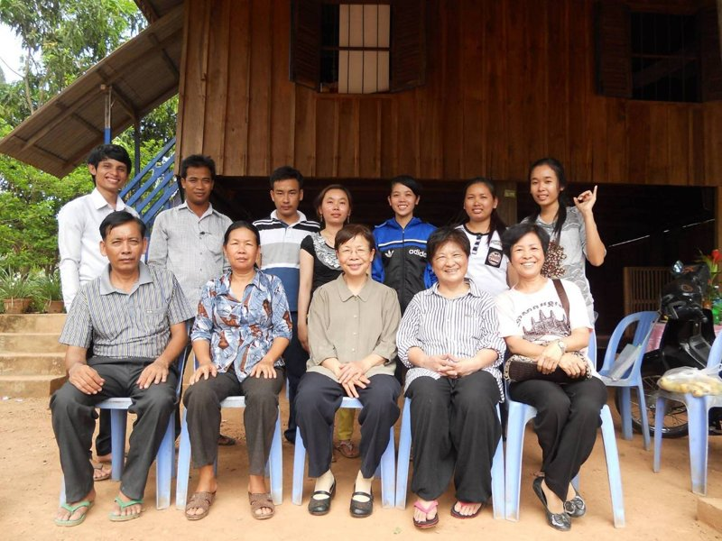

張桂香
正德佛堂




正德五十週年 — 道親心得分享
發一崇德 張桂香
───
各位點傳師、各位講師、各位前賢，大家好。後學是張桂香，於民國93年8月21日求道。
求道當天早上，後學帶著孫子在公園散步，心中忽然浮現一個念頭，想到錦華市場去探望一位講師——她在市場裡賣衣服。後學到的時候，她正在唱善歌。後學好奇地問她：「您的歌詞怎麼都能夠背得起來？」她回答：「不知道耶，可能是我老師在加持吧！」後學當時心想：妳的老師又不是仙佛，如何能幫妳加持呢？
後來她問後學平時有什麼消遣，後學說自己也很喜歡唱歌，不過都是去卡拉OK，另外也在學校當過志工。因為剛搬來新竹，還不知道要去哪裡當志工。她說：「想要當志工，可以到我們佛堂來啊！」後學問她佛堂在哪裡，她用手比著說：「在大遠百後面。」後學便說：「那很好啊，有機會再跟妳一起去看看。」
話才說完，她的電話就響了，有人請她去擔任執禮的工作。於是後學就跟著她一起去佛堂拜拜。原本只是想去當志工服務，沒想到就這樣子因緣聚會，跟著一起去求了道。
求道之後，後學便參加初一、十五的仙佛班演習。到了十二月聖誕節前後，又參加了兩天法會。參加法會以後，後學才深刻體會到，原來這個道是如此的尊貴。法會圓滿之後，後學接著參加讀經班，以及五年進修班之研習，至今已經二十一年了。
非常感恩天恩師德，感恩點傳師慈悲，感恩道場以及各位講師的提攜，讓後學有在道場學習了愿的機會。謝謝大家。
（依張桂香道親錄音整理，民國115年6月）